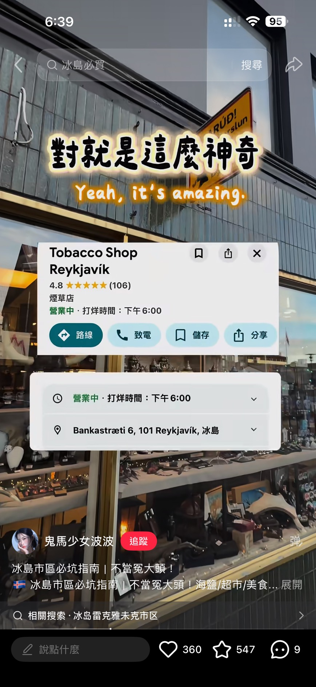
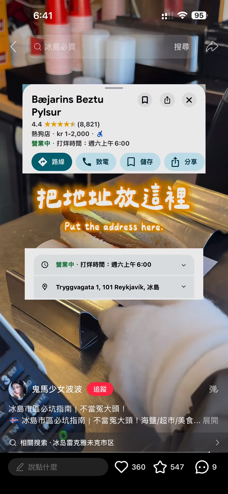
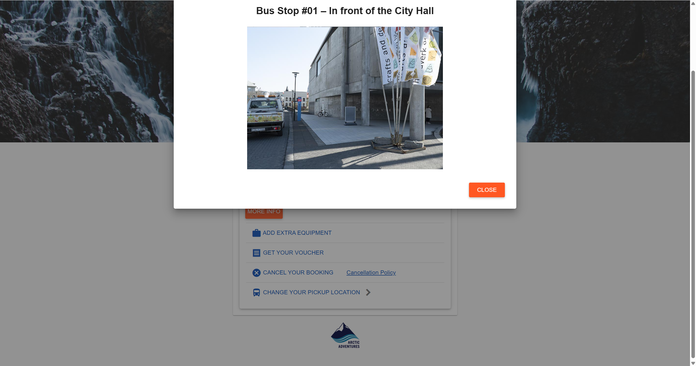
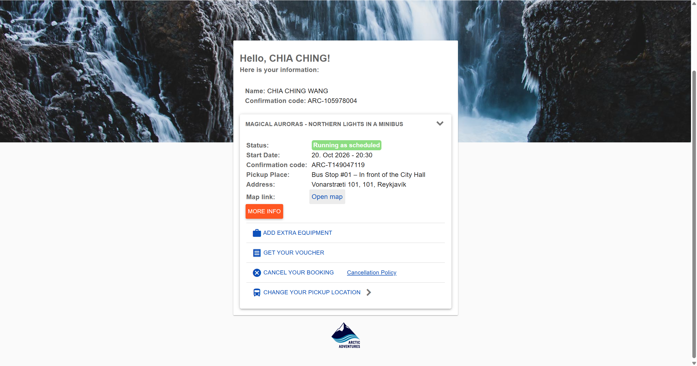

睡飽、採買、簡單煮
昨夜兩點多才入住；今天保留午睡與晚餐時間。10/21–23 參加三日團。
續住 Reykjavik4You：今天輕鬆買菜、找伴手禮，晚上 20:30 參團追極光，上車地點為 Bus Stop #01 市政廳前（依最新確認截圖）。
昨夜兩點多才入住；今天保留午睡與晚餐時間。10/21–23 參加三日團。
最新確認截圖列 10/20 20:30，Bus Stop #01 – In front of the City Hall 上車；截圖顯示照常出發。
集合提醒 ↓「網頁標價」附來源；「預留預算」只是規劃估算。庫存與現場售價仍以門市為準。
以下均為建議行程，尚未完成。先逛 Mjúk、彩虹街和教堂；Tobacco Shop 建議 18:00 前到。三人步調慢，景點只挑兩三個就好。
熱狗可當輕食；風雨大就縮短海邊路線，改逛市區商店。
冷藏牛奶、三明治與冷凍披薩留到散步最後再買，買完直接回住宿。
蔬菜蛋泡麵或烤披薩，留時間收拾明早三日團行李。
依最新確認截圖，活動開始時間為 20:30；建議 20:00 抵達 Bus Stop #01 市政廳前等車。20:00 為提早到場建議，並非憑證列示的接車時間。
保留七張原始參考圖，方便到現場對照包裝。點圖片可看完整截圖。以下不是已購入紀錄。
預留 ISK 700–1,000／包（估算）
去哪買：Bónus 冷藏三明治櫃找同包裝；其他超市供貨依門市。
正確品牌是 JUMBO。官方確認為烤牛肉、rémoulade 醬與炸洋蔥，冷藏 0–4°C。截圖上 709／759 的標籤無法確定對應此包，不當成現價。
預留 ISK 1,000–1,800／盒（估算）
去哪買：截圖標註 Bónus；到冷凍披薩櫃找 Da Michele，不是右側 Budget 三入組。
照片可辨認瑪格麗特口味，但未查得冰島門市即時標價與庫存。它是義式品牌商品；是否好吃屬個人口味。依包裝烘烤溫度與時間操作。
Krónan 網頁標價 ISK 386／1 L
去哪買：Krónan 或 Nettó 找同名棕盒；Krónan 網頁列部分門市供貨，未列 Hallveigarstígur，市中心店不保證有。
品牌 MS，品名 Súkkulaðimjólk；與貓咪圖案的 Kókómjólk 包裝不同。「Bónus 一定沒有」或「某超市一定最便宜」都未證實。買到後按包裝冷藏。
官方網店 Arctic Beanie 標示 $100.05；實店 ISK 報價待確認
去哪買：Laugavegur 23, 101 Reykjavík；官方另列 Skólavörðustígur 4、36。
官方確認為冰島家庭經營的設計品牌。截圖「300–600元」幣別不明，不能當台幣；明星同款與照片確切帽款尚未核實。官網顯示的是特定 Arctic Beanie 款價，並非所有帽款同價。
HAF 網頁標價 ISK 1,750／90 g（缺貨）
去哪買：先在超市或設計禮品店比價；下方 HAF 網頁只供價格比較，查詢時缺貨。
是海鹽混合活性碳而呈黑色，並非挖火山灰來吃。可少量撒在料理表面；外觀有特色，適合送給喜歡下廚的人。

Bankastræti 6, 101 Reykjavík
旅遊資料列週一–六 10:00–18:00，週日休；10/20 週二建議下午去，臨時休店以現場為準。
老字號煙草兼禮品小店，可找明信片、郵票與小紀念品。網友稱便宜，但沒有可核對的同款比價資料，不能保證全市最低。
預留預算：一般小紀念品 ISK 500–2,000／件（估算，未取得店內價目）。

優先選你們用得到、喜歡吃的；先少量試味道，再決定伴手禮數量。
ISK 299／杯（Krónan 網頁標價）
今天早餐或點心，濃稠的冰島乳製品，買後冷藏；適合當地吃。
購買地點：Krónan；頁面列 Hallveigarstígur 有供貨
ISK 837／包（Krónan 網頁標價）
當地品牌的經典巧克力，可吃也可烘焙；作為超市伴手禮選項。
購買地點：Krónan；頁面列 Hallveigarstígur 有供貨
預留 ISK 300–1,500（材質／款式估算）
輕、實用，可用來裝今天食材；官網列有 Bag，門市款式與價錢需現場確認。
購買地點：Bónus 門市或官方周邊商店
ISK 3,290／2 × 90 g（DÚKA 網頁標價）
想送禮可比較禮盒與單罐，兩種口味搭配；玻璃罐記得包好。
購買地點：DÚKA Kringlan／Smáralind；需另搭車，今天不必特地繞路
步行時間為規劃估算，三人慢走與拍照再多留時間。今天選兩三站即可。
玄武岩柱意象的教堂外觀與管風琴；外觀免費，教堂／登塔依開放規則，登塔另購票。10 月請優先白天參觀，當日活動與票價看官方公告。
從 Mjúk Laugavegur 23 經彩虹街上坡約 10–15 分鐘（步行估算）。
彩虹路面、街邊小店與教堂取景；戶外免費，可和 Mjúk 串在一起。
Tobacco Shop 往東步行約 5 分鐘（估算）。
欣賞幾何玻璃外牆，雨天可視開放情況在公共區域短暫休息；音樂會與導覽另售票。
熱狗攤步行約 5–10 分鐘（估算）。
湖畔短走、看水鳥，也可白天先熟悉今晚 City Hall 集合區；Bus Stop #01 在 Vonarstræti，與市政廳正門不是同一定位。
Tobacco Shop 步行約 8–12 分鐘（估算）。
免費戶外鋼雕，概念是夢之船與對太陽的讚歌。海邊風雨大就跳過，留體力給晚上。
Harpa 沿海步行約 10–15 分鐘（估算）。
Mjúk → 彩虹街 → 教堂 → Tobacco Shop → 熱狗攤 → Harpa。托寧湖可替換 Harpa；買完冷藏／冷凍食材就回公寓。
Hallveigarstígur 1，官方列每天 08:00–21:00。可優先補蔬菜、蛋、Skyr 與巧克力；照片款 MS 牛奶的網頁分店清單未列此店，需現場詢問。
Laugavegur 59，市中心採買選項。找 JUMBO 三明治、照片中的披薩與小豬袋；即時庫存與營業時間由官網門市定位或現場確認。
預算：今晚三人簡餐預留 ISK 3,000–5,000，早餐及飲料另留 ISK 2,000–3,500（均為估算，伴手禮另計；若選三份三明治，早餐預留上限較充裕）。
明天換去三日團，冷藏與冷凍品以今明早吃完為主，避免買太多。
開啟極光拍攝設定：iPhone / Luna Ultra →
活動：MAGICAL AURORAS – NORTHERN LIGHTS IN A MINIBUS
開始時間：2026/10/20 20:30
上車地點：Bus Stop #01 – In front of the City Hall（市政廳前）
憑證地址：Vonarstræti 101, 101, Reykjavík
地圖座標：64.146316, -21.941491
建議 20:00 抵達站牌等車。這是提早到場建議；截圖列示的活動開始時間為 20:30，未另列接車窗口。
請對照下方現場照片，認明市政廳旁藍色站牌與旗幟，依上述座標導航到上車點。
防風防水外套、保暖中層、毛帽、手套、厚襪與好走的鞋；手機充滿電，帶行動電源、訂單與小點心。明早還要參團，回房即可休息。
實際追光地點與回程時間由業者依天候安排；極光不是保證出現。冰島氣象局雲量與極光預報。


查核日期：2026/10/20。抵達、行李、下雨、入住體驗依你親自回報；今晚 20:30 與上車地點依本次提供的確認截圖；五款商品及兩家店的圖片均為你提供的社群參考截圖，不代表本次已消費。商品卡附查到的官方或店家頁面；缺少即時售價的項目明列估算，不把社群舊價格當現價。
市區路線是建議，尚未走訪。Mjúk 的「明星同款」、Tobacco Shop 的「全市最便宜」與不同超市的絕對價差，均未取得足夠證據。